Item 0: 69 native frames
Measured 33–96 ms intervals, median 33.0 ms. One-to-one frame count/timestamps; native images retained.
Five named weak trash props, preserved originals and individual first-attempt reviews. The leaf and basket are reused. Working target 4.6 clears the original inclusive ≤4.5 queue. These scores are drafting opinions; complete actions and owner/device review remain open.
Exact individual review · Source inventory and exact prompts · Native fixture evidence
35 original checks pass. Depth210 after setup clears scenery at contact; can575,330 separates from the clogged waterfall. Five selected complete sources remain4.6. Initial ribbon remains4.3 behind the original actor/net; can sparkle still uses535,276. These gaps remain priorities.
Five individual opinions and exact fixture qualifications · Whole-canvas normalization
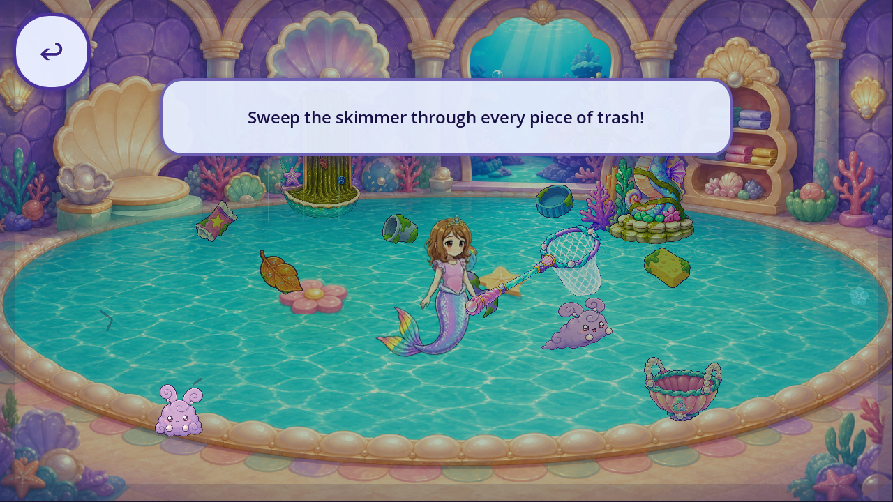
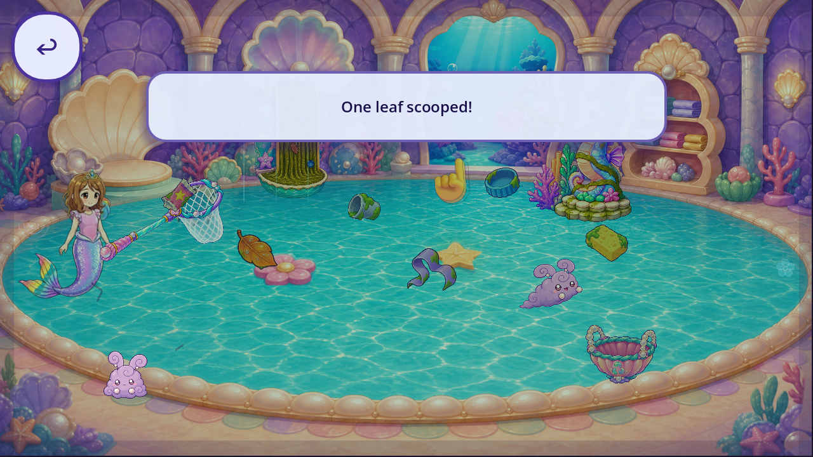
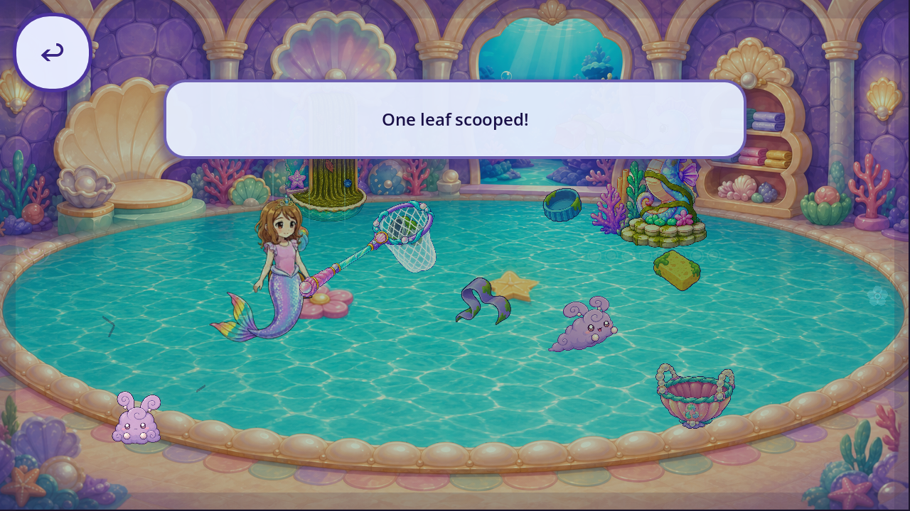
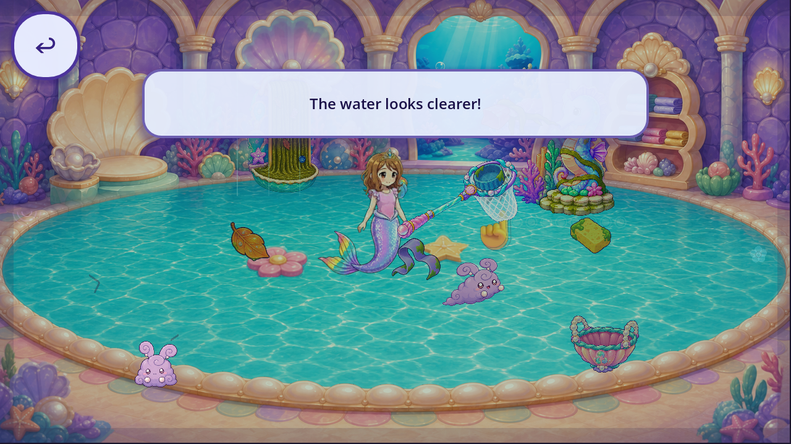
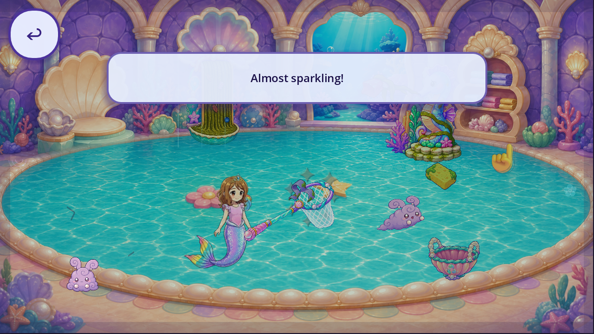
358 lossless native action frames across six actual input requests;9 route/progress checks pass. No per-frame file or hash writes during actions; GPU readback still affects cadence. Six silent compressed copies retain exact native timestamps and frame counts. Continuous playback and full approach inspection are not claimed as reviewed.
Every frame and actual time · Encoding verification
Measured 33–96 ms intervals, median 33.0 ms. One-to-one frame count/timestamps; native images retained.
Measured 33–53 ms intervals, median 33.0 ms. One-to-one frame count/timestamps; native images retained.
Measured 33–64 ms intervals, median 33 ms. One-to-one frame count/timestamps; native images retained.
Measured 33–62 ms intervals, median 33.0 ms. One-to-one frame count/timestamps; native images retained.
Measured 33–88 ms intervals, median 33 ms. One-to-one frame count/timestamps; native images retained.
Measured 33–107 ms intervals, median 33.0 ms. One-to-one frame count/timestamps; native images retained.
117 actual contact/transfer frames directly inspected in six ordered audit boards. All six handoffs remain priorities3.8–4.0: backwards start, rapid shrinking/fading, weak landing cue. The shorter sponge route reads more clearly but shares the weakness. Complete-source4.6 opinions do not establish an action pass.
Six written transfer opinions · Fresh skimmer source/native review
The collected object initially retreats from the basket while Roshan holds the net stationary, then accelerates across the room, shrinks and fades. The visible sequence gives weak support for a deliberate transfer into a container. The basket does not retain an inspectable collected item. This is a separately failed contact/transfer drafting opinion; it does not reduce the complete-source4.6 opinion.
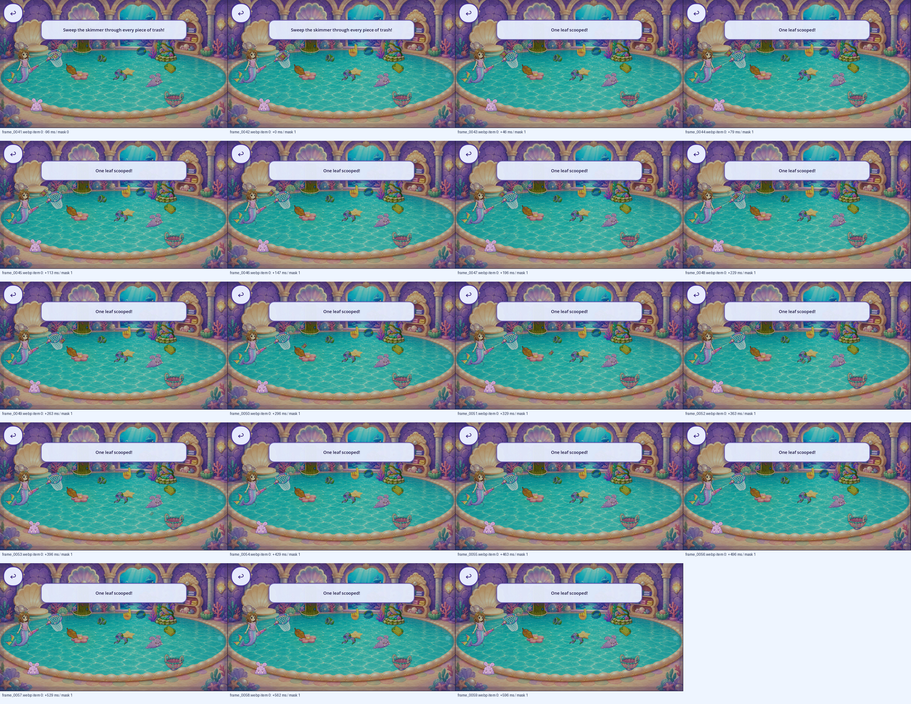
The collected object initially retreats from the basket while Roshan holds the net stationary, then accelerates across the room, shrinks and fades. The visible sequence gives weak support for a deliberate transfer into a container. The basket does not retain an inspectable collected item. This is a separately failed contact/transfer drafting opinion; it does not reduce the complete-source4.6 opinion.
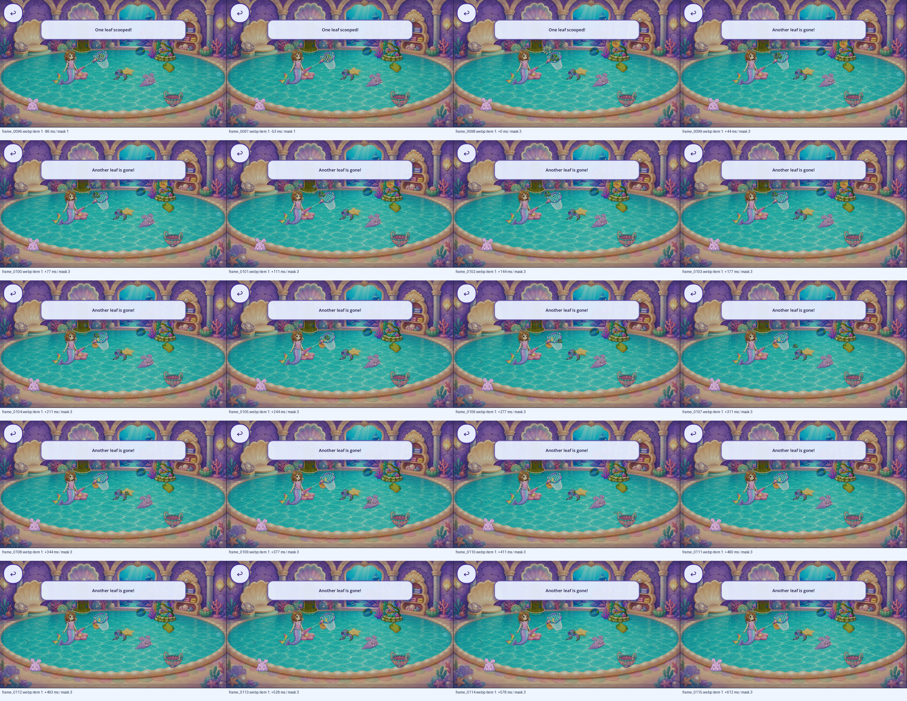
The collected object initially retreats from the basket while Roshan holds the net stationary, then accelerates across the room, shrinks and fades. The visible sequence gives weak support for a deliberate transfer into a container. The basket does not retain an inspectable collected item. This is a separately failed contact/transfer drafting opinion; it does not reduce the complete-source4.6 opinion.
The collected object initially retreats from the basket while Roshan holds the net stationary, then accelerates across the room, shrinks and fades. The visible sequence gives weak support for a deliberate transfer into a container. The basket does not retain an inspectable collected item. This is a separately failed contact/transfer drafting opinion; it does not reduce the complete-source4.6 opinion.
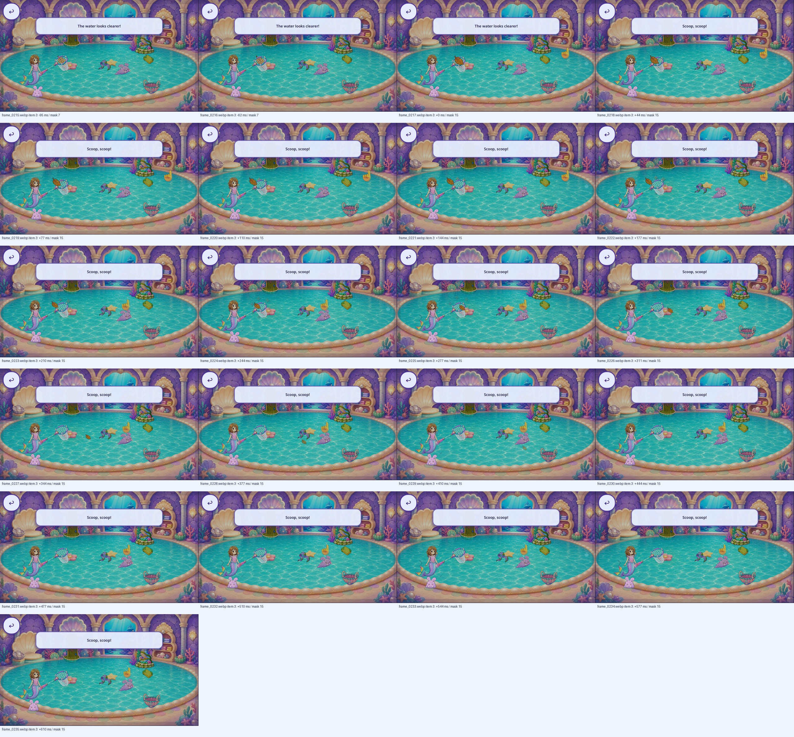
The collected object initially retreats from the basket while Roshan holds the net stationary, then accelerates across the room, shrinks and fades. The visible sequence gives weak support for a deliberate transfer into a container. The basket does not retain an inspectable collected item. This is a separately failed contact/transfer drafting opinion; it does not reduce the complete-source4.6 opinion.
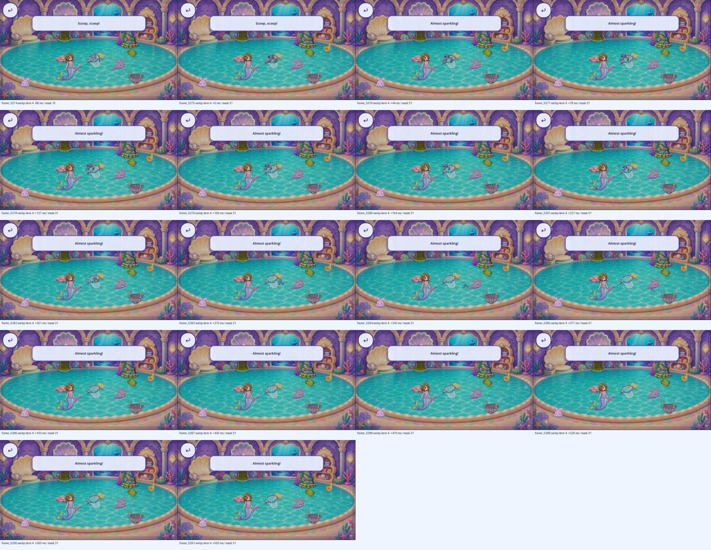
The shorter sponge route makes the descending basket endpoint easier to follow, but it shares the backwards start, shrink/fade and immediate next-phase handoff. The visible sequence gives weak support for a deliberate transfer into a container. The basket does not retain an inspectable collected item. This is a separately failed contact/transfer drafting opinion; it does not reduce the complete-source4.6 opinion.
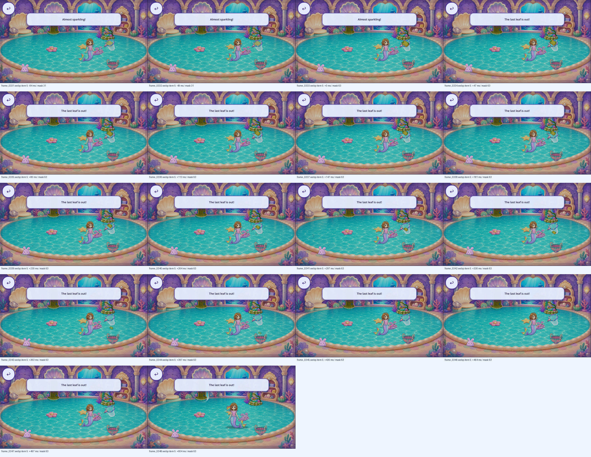
The production controller and original positions, rotations, tints and sizes are retained on a disposable test instance. Source1254px textures are review inputs only. 35 scripted checks passed; this is not an all-motion or graphics pass.
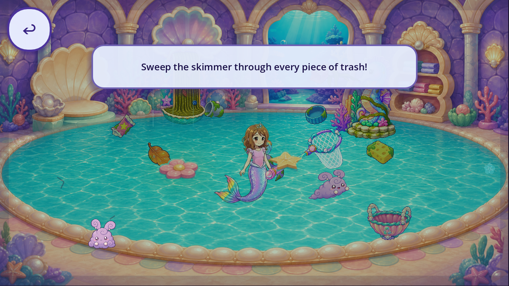
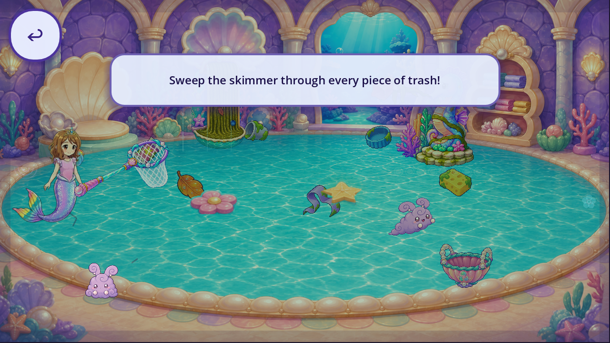
The second sponge has source and native static opinions of 4.6/5. All five subsequent asynchronous requests completed. The 46 unpaused samples expose layering defects and have actual intervals around 0.5–0.66 seconds; they do not establish full-rate transfer timing.
Second sponge opinion/provenance · Each native interaction opinion and actual cadence

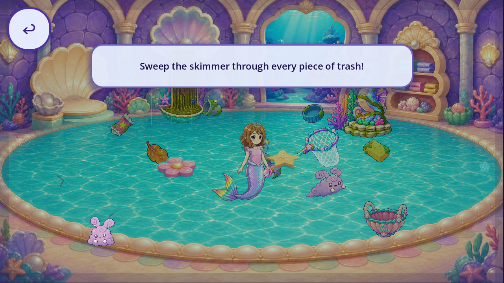
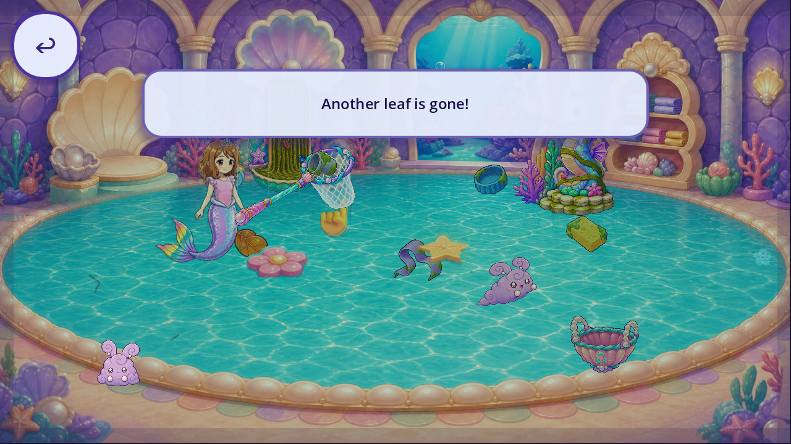
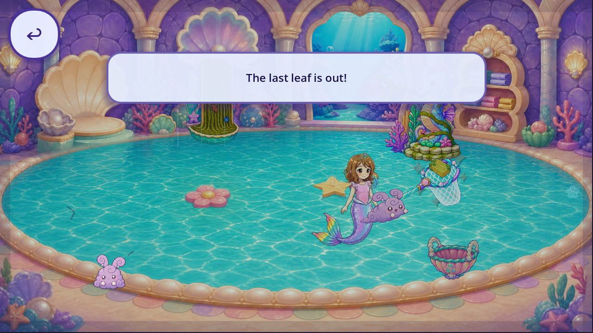
Source 4.6/5 · Native static fit 4.6/5 · Full action pending

The broad pink panel, single gold star and cream torn ends preserve the discarded-wrapper identity. A small set of painted folds replaces granular foil glints. At the actual 68px card size and original muddy tint the star and two ends remain distinct from water. The first scoop snapshots show contact and subsequent movement, but not the complete hand/net/basket transfer; no complete-action acceptance is assigned.
PROVISIONAL SOURCE AND STATIC FIT PASS
c632c732a43c74b789033032992d25f186ab8b07b3a4e785ba1b0a1c8d15b897Source 4.6/5 · Native static fit 4.5/5 · Full action pending

A continuous navy contour, oval rolled rim and broad blue-grey interior describe an open can clearly. Algae is grouped into large masses and the remaining brush texture stays subordinate. At 62px the opening reads, but proximity to the clogged green waterfall reduces separation; the mounted opinion is borderline and stays on the inclusive refinement queue. Preserve the source and test clearer placement/contrast before spending another generation.
RETAIN SOURCE REPAIR MOUNTING
a7cefbcd717708fd67c39e3ea17d1795587073d265be7527280155e6f8b7690fSource 4.6/5 · Native static fit 4.6/5 · Full action pending

The open oval, short wall and seven broad ribs preserve the blue cap identity without shiny wet microtexture. Its cobalt body separates from the aqua pool at 66px. Raw alpha reaches the canvas edge at only 1/255; the alpha 128 painted contour is wholly inset. This is not evidence of a clipped silhouette or a visible white fringe. Current snapshots establish static readability, not the full scoop/return action.
PROVISIONAL SOURCE AND STATIC FIT PASS
6610e7125c922c6565df3d26a8f629a36a41b3ca634776c26716f896bd62f8a9Source 4.6/5 · Native static fit 4.2/5 · Full action pending

One continuous lavender strip has a clear inverted-S curl, two complete tips and a readable plum underside. Broad painted bands and restrained brush texture fit the storybook props. In the unchanged 88px placement the existing star float overlaps the middle/right arc, concealing the continuous strip and sometimes leaving only disconnected-looking tips. Retain this source; the weak mounting needs an object-position/foreground ownership repair.
RETAIN SOURCE REPAIR MOUNTING
c17dc74304baed614e1ac4e95e5a74dcd1f3449d1e140285fad72ce0ef0341cdSource 4.4/5 · Native static fit 4.4/5 · Full action pending
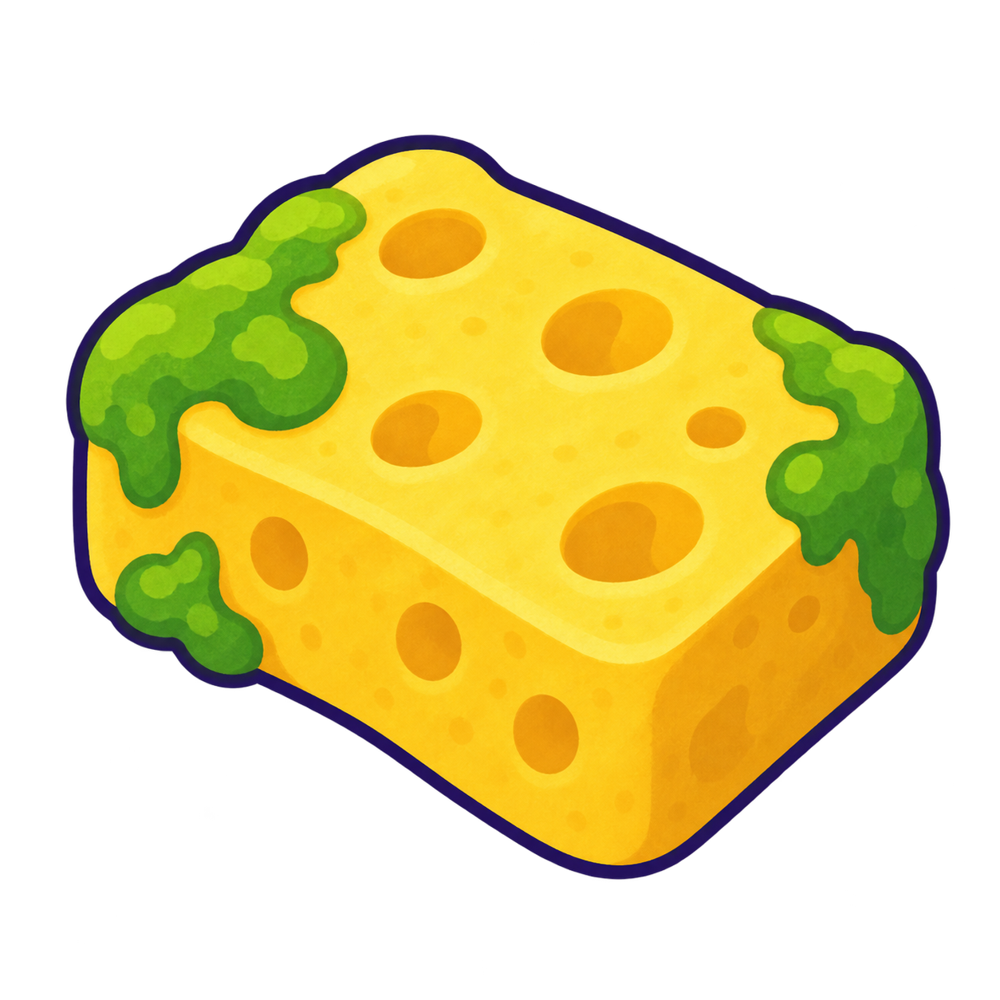
The rounded yellow rectangular block, deep-plum edge and grouped algae simplify the original speckled source. However, several large near-circular holes with round recessed shading make the block read like Swiss cheese. This identity ambiguity survives the 78px native fit. Regenerate only the pore/material treatment with shallow uneven porous marks; preserve the yellow block, orientation and discarded algae identity.
REGENERATE NAMED MATERIAL GAP
5e57051e249728a11887fb9640b68367eb4e6dc3844b66ab0f5d9dde82084c33All original production files and bindings remain intact. The second sponge source/static fit is 4.6; can/ribbon mounting and all complete scoop/net/basket actions require further review. This draft does not finish the all-jobs library or report.